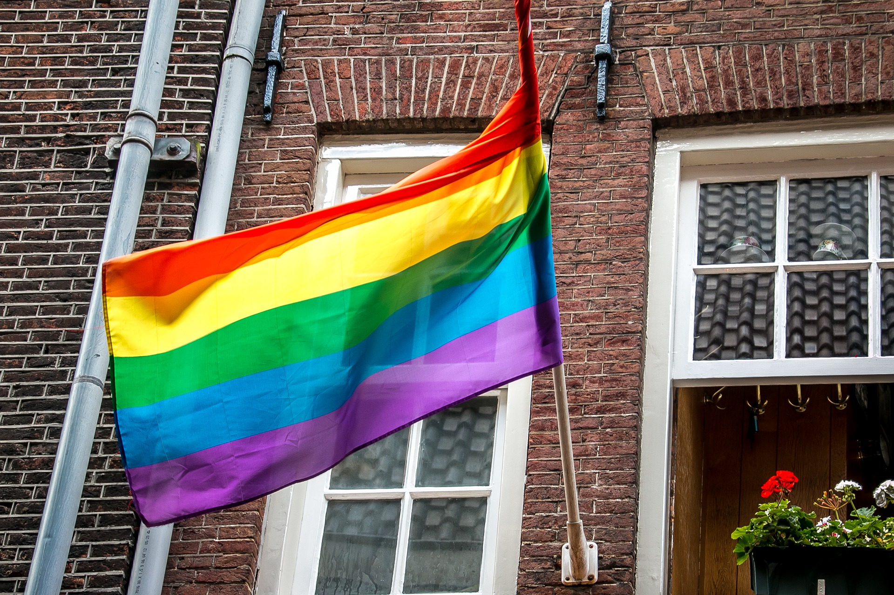

Beanie Cafe was founded in 2021 by Abigail Wilkins (they/them/theirs and xe/xem/xyr). We aim to cater to the SLO community with delicious, dietary-friendly meals & treats, in an LGBTQ+ friendly, trans-inclusive, anti-racist, accessible space.
Whether it’s enjoying a cup of morning coffee on our beautiful porch, playing a board game in the back with your friends, or listening to a local artist on our mic nights, there’s always something at Beanie Cafe for you, your friends, and your family!